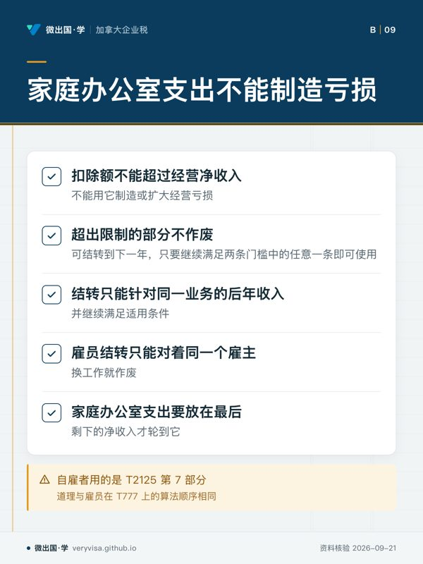
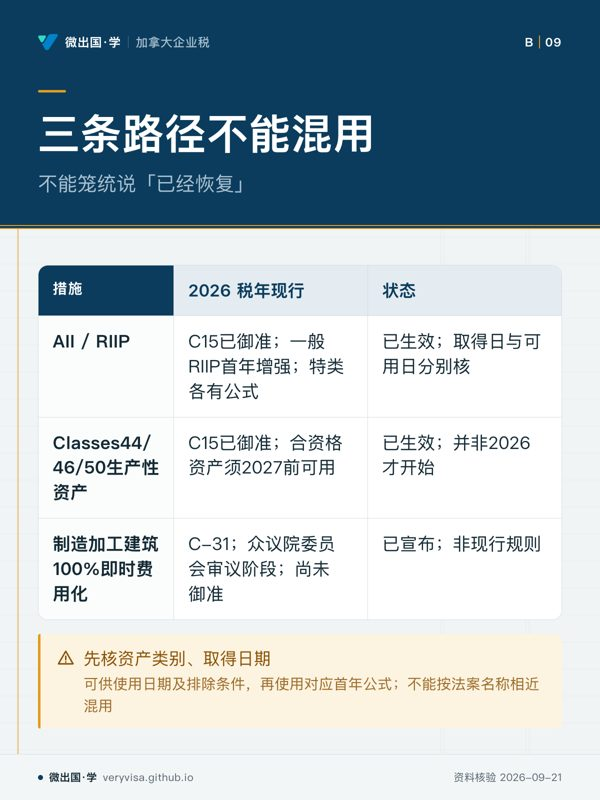
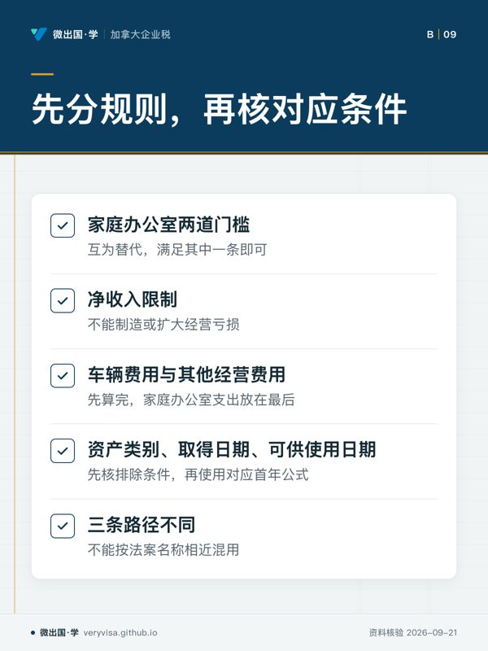

🃏 Flashcards · 3 闪卡 · 3 张 🖼 Slides · 4 幻灯 · 4 页 ✍️ Questions · 7 刷题 · 7 道
自雇与小生意 Self-employment and small business P1 必拿分 P1 Must score
ZH EN ZH + EN
先看这一章怎么考 First, how this chapter is tested
资格门槛辨析题：给出自雇者在家办公与外出执业的混合场景，考查家庭办公室（business-use-of-home expenses）两道替代性门槛（主要营业地或专用且经常持续当面会客），测试考生是否被「在家工作时间长」或「经常视频会议」带偏。 Eligibility threshold questions: a self-employed person works partly at home and partly out of an outside practice, and you are tested on the two alternative thresholds for business-use-of-home expenses (principal place of business, or exclusive use and regular, continuous use for meeting clients in person), to see whether you are misled by "many hours worked at home" or "frequent video meetings". 自雇与雇员规则对比题：列出水电暖、物业税（property tax）、房屋保险、按揭利息（mortgage interest）与按揭本金，测试谁能扣按揭利息、谁永远不能扣按揭本金或资本性装修。 Self-employed vs. employee comparison questions: utilities, property tax, home insurance, mortgage interest and mortgage principal are listed, testing who can deduct mortgage interest and which items (mortgage principal, capital renovations) can never be deducted. 扣除顺序与净收入限制题：给出扣除家庭办公室支出前的经营净收入与分摊后的家庭办公室支出总额，考查 T2125 先算车辆与普通费用及 CCA、最后算家庭办公室且不得制造或扩大经营亏损的规则，以及超出部分向后结转的条件。 Deduction order and net income limit questions: you are given business net income before the home office deduction and the total of allocated home office expenses, testing the rule that T2125 first computes vehicle and ordinary expenses and CCA, the home office last, with no creating or increasing a business loss, and the conditions for carrying the excess forward. 最常丢分的陷阱（看到题干信号就警觉） Traps that cost the most marks (watch for the signal in the stem)
工时与视频会客混淆陷阱 Mixing up hours worked with video client meetings 题干出现「另有租用工作室/门店/诊所」且在家仅处理账务、回复订单或通过电话/视频会议联系客户。 The stem says there is "another rented studio, shop or clinic" and that at home the person only handles accounts, answers orders or contacts clients by phone or video. 雇员与自雇清单串位陷阱 Swapping the employee and self-employed lists 题干同时出现 mortgage interest、mortgage principal、property tax 或按在家工作天数定额申报的表述。 The stem mentions mortgage interest, mortgage principal, property tax, or a flat amount based on days worked at home. 家庭办公室制造亏损陷阱 Creating a loss with the home office 题干给出的扣除家庭办公室支出前净收入低于分摊后的家庭办公室支出金额。 The stem gives net income before the home office deduction that is lower than the allocated home office expense amount. 本章考点页：导图、要点表、7 道带逐项解析的练习 →
核实日期：2026-09-05｜本页口径：2026 税年（2027 年春申报） 。乘用车的资本成本、租赁与利息三项上限逐年由财政部公布调整，下次复核 2027-01-31；家庭办公室与车辆费用的资格判据（《所得税法》s.18(12)、Income Tax Folio S4-F2-C2）是长青法条与解释性文件，机制层面 2027-09-01 才需重核。自雇身份判定、T2125 表结构与 CPP/EI 见 T2125：从「我是自雇吗」的四因素判定，到「亏损怎么用」的一整条链（Self-Employment & Form T2125） （另篇）；GST/HST 注册与费率见 GST/HST：什么时候必须注册，注册后怎么算最省（Registration, ITCs and the Quick Method） （另篇）；受雇雇员版的家庭办公室与车辆规则见 ca-core-04（另篇）——两侧规则出发点相似、细节处处不同，本页只讲自雇（T2125）这一侧，正文逐条标出与雇员规则的差异。
上一页把 T2125 的骨架搭完，也把「现行支出 vs 资本性支出」的判断标准讲清楚了——这一页接手的是被判定为资本性支出之后怎么处理，外加一项虽是现付费用、却常年被算错的项目：家庭办公室。三件事写在一起，是因为它们共用同一道底层考题：同一笔钱、同一件财产，一部分是生意的、一部分是你自己的，法律要求你先拆开两部分，再决定生意那一部分能不能扣、什么时候扣 。这一页帮你判断在家工作那间屋子够不够格报家庭办公室支出、该扣多少，用行车日志把一辆车的费用拆成经营与个人两半并看清联邦给乘用车设的几道天花板，再把新买的资本财产归到正确的 CCA 类别、算出第一年最多能提多少折旧。
想检验自己，可以做本板块的练习题（共 46 道）：按主题练习 。
一、制度设计与底层逻辑：为什么「花在生意上的钱」不是自动就能扣 本节回答 This section answers 混合用途财产与资本性支出分别靠哪条税法规则松绑及受何限制 Which tax rules relax mixed-use property and capital outlays, and what limits apply
1.1 起点仍是那两条通则，这一页加了三条专门条文
《所得税法》(Income Tax Act, ITA) 算营业利润的起点只有一句话（s.9）：收入减去为赚取这笔收入而合理发生的费用。但 s.18(1)(h) 紧接着划了一条底线：个人生活费用一律不可扣 ，唯一明文例外是出差在外的旅行费。房子与车天生是「个人」与「生意」混用的东西，没有专门条文松绑，s.18(1)(h) 会把它们整个挡在门外。这一页的三个主角，正是立法者为混合用途财产各自开的一道口子：家庭办公室 靠 s.18(12) 这条写死两条门槛的例外条款；车辆费用 没有单独的资格测试，回到 s.9 与 s.18(1)(a) 的目的测试上如实分摊，再由 s.13(7)(g)/(h)、s.67.2、s.67.3 加装几道法定天花板；资本性支出 默认被 s.18(1)(b) 挡在当年费用之外，靠 s.20(1)(a) 与所得税条例（Income Tax Regulations, ITR）里的资本成本折让（capital cost allowance, CCA）另开一条按年分期扣除的路。三条松绑力度不一样：家庭办公室最紧（两选一硬门槛），车辆最松（如实分摊 + 天花板），CCA 是「按类打包、统一费率」的行政简化方案。
1.2 家庭办公室为什么设两道门，且必须二选一
如果只要求「确实在家做过一部分工作」就能扣，几乎每个自雇者都能报出一笔家庭办公室支出，CRA 也没法逐户核实「这间屋子多大程度是办公室」。立法者选了更硬的路：要么这里是做生意主要经营场所（principal place of business），要么这块空间专门用来赚这份营业收入、并经常持续用于当面接待客户 。两条门槛是替代关系 ，满足其一即可。这背后的博弈很清楚：纳税人想「沾边就能扣一点」，CRA 要守住「真把家当经营场所的人才能扣」，两条可替代的资格路径把中间地带的「偶尔在家处理事务」挡在外面。
「当面」二字要单独强调：CRA 对「见客户」的解释沿用「meet」最传统的含义——面对面 ，电话或视频会议不算数（CRA ）。一个常年靠 Zoom 见客户、以住宅为主要经营地点的顾问，若家确实是主要经营场所，仍满足第一条（不需要靠第二条）；但若她另有办公室、只是偶尔在家视频见客户，两条都够不上。
1.3 车辆费用没有专门门槛，靠「如实分摊 + 天花板」管住
法律没有给「车够不够格报销」设资格测试，只要求把总费用按「经营公里数 ÷ 总公里数」如实分摊。这条路看似更宽松，但立法者担心的问题不同——分摊比例是自己报的，天然有做高的动机，而车价本身没有上限 ，一辆百万豪车只要声称 90% 用于业务，就能把大部分折旧转嫁给税基。于是换一种管法：不卡分摊比例本身，卡能进入计算的车价与相关成本的绝对上限 ——乘用车归入 Class 10.1、成本基础封顶，贷款利息与租赁费用各设月度上限（s.67.2、s.67.3）。分摊比例报多高都不改变这个与车价脱钩的天花板，CRA 也不必逐案争论「这辆车贵不贵算合理」。
1.4 CCA 为什么按类别打包，半年规则与加速投资激励在博弈什么
资本财产逐件精确折旧的行政成本太高，CCA 体系选了粗糙但便宜的算法：同类财产打包成一个「类别」，按类别的未折旧资本成本余额（undepreciated capital cost, UCC）乘固定费率折 ；近似值与实际贬值的差额，留到处置时用追加折旧（recapture）或期末亏损（terminal loss）一次纠正（§2.8）。购置当年打折（半年规则）也是同样的懒办法：年中买入本该只折半年，法律统一按「视同用了半年」处理，省去逐日精算。加速投资激励（accelerated investment incentive, AII） 是另一层博弈——不是更精确的算法，而是投资时点的政策工具 ：把本该分十年扣完的折旧提前多扣一些，鼓励企业把购置计划往前挪。这项优惠一度按排期逐年退坡，但 Budget 2025 的 C-15 把它恢复足值，并落实有独立取得日期窗口的生产性资产首年全扣——这是本页最新、也最容易被旧材料带偏的一条（§2.7）。
1.5 错报的三个法律后果
家庭办公室与车辆费用 是 CRA 对自雇报表风险评分抽核的高频命中项，被抽中要限期提交行车日志与凭证；车辆扣除必须有可靠记录支持；记录不足可能被调整或拒绝，不能假定事后估算会获接受。CCA 分类错误 （如把超上限乘用车硬塞进普通 Class 10 规避天花板）一旦查出不仅要重算，还可能被认定蓄意错报而加重处罚。家庭办公室支出扣成经营亏损 是最常见的技术性错误——超出净收入限制的部分本身不罚，但结转登记跟丢的情形很常见，几年下来这笔余额就悄悄消失了。
节末检索小测 · 先别往回翻，凭记忆作答 Quick recall check: answer from memory before scrolling back
Under the Income Tax Act framework for a self-employed proprietor, how do the statutory restrictions treat home office expenses, vehicle expenses, and capital property acquisitions differently?
在《所得税法》针对自雇业主的制度框架下，法定限制如何区别对待家庭办公室支出、车辆费用与资本财产购置？
a Both home office and vehicle expenses must pass a two-prong principal-place test before any business proportion of the cost can be claimed. ✗ 车辆费用并没有类似家庭办公室的两道资格门槛测试，而是回到 s.9 与 s.18(1)(a) 按经营公里数比例分摊并受法定上限约束，这落入了把家庭办公室门槛套用到车辆上的陷阱。 Vehicle expenses have no two-threshold eligibility test like the home office; they return to s.9 and s.18(1)(a) with allocation by business kilometres and statutory ceilings, so this falls into the trap of applying the home office thresholds to vehicles.
b Home office costs face two s.18(12) gateway tests, vehicle costs are prorated by business use under dollar caps, and capital goes through CCA. ✓ 家庭办公室（business-use-of-home expenses）受 s.18(12) 两选一硬门槛约束，车辆费用（vehicle expenses）按实际经营比例分摊并受 s.13(7)(g)/(h)、s.67.2、s.67.3 法定天花板限制，资本性支出则被 s.18(1)(b) 挡在当年费用外，改由 s.20(1)(a) 按类别计算资本成本折让（capital cost allowance, CCA）。 The business-use-of-home expense is bound by the either-or hard threshold of s.18(12); vehicle expenses are allocated by actual business proportion and limited by the statutory ceilings in s.13(7)(g)/(h), s.67.2 and s.67.3; capital outlays are kept out of current expenses by s.18(1)(b) and instead go through capital cost allowance (CCA) by class under s.20(1)(a).
c Capital property is deducted in full as a current expense under s.9 unless the taxpayer elects to defer part of it into a CCA pool. ✗ s.18(1)(b) 默认禁止将资本性支出作为当年现行费用扣除，必须通过 s.20(1)(a) 与《所得税条例》的 CCA 机制按类别分期扣除（除非属于特定首年全扣类别），而非默认全额现扣。 s.18(1)(b) by default prohibits deducting capital outlays as a current expense; they must be deducted over time by class through the CCA mechanism under s.20(1)(a) and the Income Tax Regulations (except for classes with a full first-year write-off), not written off in full by default.
d Personal living expenses under s.18(1)(h) are fully deductible whenever an asset is used at least half the time for business. ✗ s.18(1)(h) 明确规定个人生活费用一律不可扣，混合用途财产只能扣经营使用那一部分，不存在「使用过半即可把个人部分一并扣除」的规则。 s.18(1)(h) expressly provides that personal living expenses can never be deducted, and mixed-use property can deduct only the business-use portion; there is no rule that "use over half lets you deduct the personal part too".
看答案与每个选项的解析 Show the answer and why each option is right or wrong 答案 Answer ：b
二、2026 税年现行规则与数字 本节回答 This section answers 家庭办公室门槛、日志基准年法、CCA分类与折旧新政 Home office thresholds, the logbook base year method, CCA classes and the new depreciation rules 本章考题 1 Question 1 本章考题 2 Question 2 本章考题 3 Question 3
2.1 家庭办公室两道门槛，逐条拆开
图：家庭办公室两道门槛——满足其中一条即可申报
现行规则下（CRA ），你只要满足以下两条中的任意一条 ，就可以就家中的工作空间申报家庭办公室支出：
它是你经营业务主要经营场所 （principal place of business）——综合业务活动判断这里是否为chief/main经营地点；在别处也有业务活动不自动失格；这块空间专门用来赚取这份营业收入，并且经常持续地用于当面接待客户、顾客或患者 ——「专门」意味着不能同时兼作卧室或客厅，「当面」意味着电话与视频会议不算数（CRA ），「经常持续」的判断标准会随业务性质浮动：一门本来就极少需要见面、或见面时间毫无规律的生意，天然很难满足这一条。
两条门槛互为替代，满足其中一条即可，不需要同时满足两条。
⚠️
「我常常在家处理订单」不等于满足门槛
一位在商场租了柜台的自雇珠宝设计师，晚上回家用餐桌处理订单、回复客户消息，这不满足第一条（若柜台按实际活动才是主要经营地点），也不满足第二条（她在家没有当面见过客户）。「花了很多时间在家工作」从来不是判据，判据是「这块空间是不是主要经营地点」或「是不是专门用于当面会客」。
2.2 能扣什么：自雇比雇员宽在哪一格
满足门槛之后，可以按比例申报的支出包括：水电暖、房屋保险、房屋维修（与工作空间相关的部分不按面积分摊，仍按时间分摊）、部分物业费或公寓管理费、网络费，以及——这是自雇与雇员规则里差异最大的一格 ——物业税（property tax）与按揭利息（mortgage interest） ，以及该空间对应比例的资本成本折让（CCA，见 §2.5，是否申报可自行选择）。
ca-core-04 讲过雇员的规则：受薪雇员完全不能扣物业税与房屋保险，只有佣金雇员能扣这两项；而任何一位自雇者，无论收入形式是什么，都能扣物业税、房屋保险，外加雇员两个身份都用不上的按揭利息 （CRA ）。这一条常被搞反——不少人以为自雇比雇员审核更严、能扣的更少，实际这一格正相反，因为立法者把「住所本身可能就是营业场所」写进了自雇资格测试的第一条。
✕
按揭本金、资本性装修，两种身份都不能扣
按揭利息可以按比例扣，但按揭本金还款永远不能扣 ——那是资产负债表上的净值转移，不是费用。同理，换窗户、换地板、装修厨房这类让房屋整体升值的资本性支出，也不能作为当年费用直接进家庭办公室清单，只能通过 CCA 按房屋所占的资本成本比例逐年折旧（而且多数自雇者会因为主居所免税的考虑而选择不对住宅本身申报 CCA，见 ca-property 板块另篇）。
分摊算法分两步：先按工作空间面积 ÷ 住宅总面积 ，算出面积比例；如果这块空间不是专用（例如同一张桌子白天办公晚上吃饭），再按该空间用于经营的时间比例 打第二折。只与工作空间本身相关的支出（比如粉刷那一间屋子的费用）不按面积分摊，但仍要按时间分摊。
2.3 净收入限制与结转：不能靠它制造亏损
家庭办公室支出有一条硬限制：扣除额不能超过申报这些支出之前的经营净收入，不能用它制造或扩大经营亏损 （CRA ）。超出限制的部分不作废，可结转到下一年，只要继续满足两条门槛中的任意一条即可使用——这与 ca-core-04 讲的雇员规则不同：雇员的结转只能对着同一个雇主 的未来收入用，换工作就作废；自雇者没有「换雇主」这回事，结转只能针对同一业务的后年收入，并继续满足适用条件。
操作顺序上，家庭办公室支出要放在最后 ：先算完车辆费用（§2.4）与其他经营费用，剩下的净收入才轮到它——道理与雇员在 T777 上的算法顺序相同，只是自雇者用的是 T2125 第 7 部分。
2.4 车辆费用：分别归集现付、折旧及直接归属的停车费用
车辆的一般现付费用（汽油、保养、保险、贷款利息、租赁费；直接业务停车费另按实际归属）与折旧（CCA）分开申报，但共用同一个经营使用比例 ：这一年公里数中有多少是为了赚这份营业收入开的。证据是行车日志（logbook）：日期、目的地、事由、公里数，加上年初年末的里程表读数。
现行规则给了一条简化路径（CRA ）：先完整记满一整个自然年，确立「基准年」的经营使用比例；之后每年只需连续记三个月的抽样日志，比例落在基准年的 10% 浮动范围内就可以继续沿用 ，不必每年记满整年。行驶模式一旦实质变化（换了主要客户群、搬了办公地点），基准年就不再有代表性，需重新做一整年记录。记录须保存六年 ，从相关税年年末算起。
ℹ️
行车比例需要证据，不能预设CRA会接受估算
保留连续日志是可靠路径；资料不全时须用可验证证据支持实际业务使用，不能保证补记资料获接受或一律整笔拒绝。先把日志养成习惯，比出了问题再补救便宜得多。
2.5 CCA 体系全景：常见八个类别怎么分类
自雇者最常遇到的资本财产大致落在下面几个类别（费率为按declining-balance 法计算的年费率，CRA ）：
购置当年通常要经过半年规则或其加成版本这一关：符合 AII 条件的净增置，第一年可按类别费率的 1.5 倍申报（相当于把半年规则的五折换成加成版），详见 §2.7。CCA 是否申报可以自行选择——不申报、或申报低于上限的金额都合法，留出更高的未折旧余额供以后年度使用；但一旦几件财产共用一个类别，同一年只能对整个类别选择一个申报额度，不能对类别内某一件多提、另一件少提。
2.6 乘用车的三道天花板：2024 → 2025 → 2026
这是本页最需要按年核对的一组数字，由财政部每年年底公布次年适用值，只对当年及以后新购置或新签约 的车辆生效，已有车辆沿用购置当年的上限：
四个数字都是联邦统一天花板，不设省级附加额度 ，超出部分永久不能计入 CCA 成本基础，也不能作为利息或租赁费用直接扣除——它们不是「打折计入」，而是彻底排除。零排放乘用车走 Class 54，享有明显更高的资本成本上限，这是联邦鼓励购置电动车的一条渠道，与省级的购车补贴是两件不相关的事（见 §四）。
2.7 加速投资激励与即时费用化：三态分清楚
这一块是 2026 税年变化最大的一组规则，必须分开三条来写，不能笼统说「已经恢复」 ：
先核资产类别、取得日期、可供使用日期及排除条件，再使用对应首年公式。RIIP一般资产、Classes44/46/50生产性资产、制造机器设备和制造建筑是不同路径。前两项已实施；制造建筑提案仍须追踪C31，不能按法案名称相近混用（laws-lois.justice.gc.ca（1（论坛解读） 、2（论坛解读） ））。2026 年 9 月提出的 Productivity Mega Deduction 立法前不能用于申报；2026 税年仍按上表已生效的两条路径计算（财政部 2026-09-15 新闻稿、Budget 2026 税务措施补充资料）。
2.8 处置时怎么收尾：追加折旧、期末亏损，以及 Class 10.1 的例外
类别期末UCC在年度增减调整后为负时，即使仍有其他财产留在类中，差额要作为追加折旧（recapture） 计入当年收入；如果申报额不够、类别里已经没有财产但仍有未折旧余额，剩余部分可以作为期末亏损（terminal loss） 全额扣除，且terminal loss 可以用来抵扣任何来源的收入，不像资本损失那样只能抵资本利得。
Class 10.1 是这条规则的例外 ：每辆超过上限的乘用车单独成类，处置时既不计算追加折旧，也不允许期末亏损（依据分别是 s.13(2) 与 s.20(16.1)）——超出上限的那部分车价从一开始就没有进入过 CCA 系统，处置时自然也不会再冒出来；但处置当年，只要这辆车在上一年年末仍在 Class 10.1 里，仍可以申报正常费率一半的 CCA。这条规则常被误解为「Class 10.1 完全不能在处置年拿折旧」，实际是「拿一半，不追缴也不补亏」。
节末检索小测 · 先别往回翻，凭记忆作答 Quick recall check: answer from memory before scrolling back
A self-employed graphic designer kept a complete daily vehicle logbook for the entire prior calendar year, establishing a base-year business-use rate. Under the simplified logbook rule, how can she support her vehicle deduction in the current year if her driving pattern has not materially changed?
一名自雇平面设计师在上一整个自然年保留了完整的逐日行车日志，确立了基准年经营使用比例。在行驶模式未发生实质变化的情况下，她今年如何运用简化日志规则支持车辆费用扣除？
a She keeps a continuous three-month sample each year; if it is within 10% of the base-year rate she keeps using that rate, and keeps records six years. ✓ 根据基准年抽样法（base year method），在记满一整个自然年确立基准年比例后，之后每年只需连续记录三个月抽样日志，只要比例落在基准年 10% 浮动范围内即可继续沿用，且相关记录须从相关税年年末起保存六年。 Under the base year method, after a full calendar year of records establishes the base year percentage, each later year needs only a continuous three-month sample logbook, and the percentage can continue to be used as long as it falls within a 10% variance of the base year, with the records kept for six years from the end of the relevant tax year.
b She never needs to record mileage again unless the Canada Revenue Agency sends a written audit notice. ✗ 确立基准年后并非永久免记，每年仍须保留连续三个月的抽样日志以验证比例仍在 10% 范围内，完全不记日志会在抽核时因缺乏证据而面临拒扣风险。 Once the base year is established you are not permanently excused from keeping records; each year you still need to keep a continuous three-month sample logbook to verify that the percentage remains within 10%, and keeping no logbook at all risks a denial on review for lack of evidence.
c She may estimate business kilometres at year-end from fuel receipts alone, provided she keeps those receipts for three years after filing. ✗ 仅凭油费收据在年底估算公里数不符合行车日志（logbook）要求，且法定保存期限是相关税年年末起六年而非三年。 Estimating kilometres at year end from fuel receipts alone does not meet the logbook requirement, and the statutory retention period is six years from the end of the relevant tax year, not three.
d She only needs to record one month of trips and stay within a 30% variance of the base-year percentage. ✗ 抽样日志要求连续记录三个月且浮动范围不超过基准年的 10%，「一个月」和「30%」均不符合现行规则数字。 The sample logbook requires three consecutive months and a variance of no more than 10% of the base year; "one month" and "30%" both fail the current rule numbers.
看答案与每个选项的解析 Show the answer and why each option is right or wrong 答案 Answer ：a
三、实务流程：一年下来该怎么走 本节回答 This section answers T2125表上车辆、CCA与家庭办公室的法定计算顺序及行号 The statutory calculation order and line numbers for vehicle, CCA and home office on T2125
第一步，车辆先算。 用行车日志算出全年经营使用比例，把现付费用（Chart A，落 line 9281）与车辆 CCA（Area A，落 line 9936）按这个比例入账；贷款利息与租赁费用先各自按月度上限封顶，再乘以经营比例。
第二步，再算其他经营费用与新增资本财产的 CCA。 按上一页（T2125：从「我是自雇吗」的四因素判定，到「亏损怎么用」的一整条链（Self-Employment & Form T2125） ）讲过的现行/资本判断标准分类到正确的 CCA 类别，确认是否符合加速投资激励条件（§2.7），汇总落到 line 9936。
第三步，最后才算家庭办公室支出。 它受净收入限制（§2.3），必须先知道扣完前两步后还剩多少净收入。按面积（必要时再按时间）算出比例，汇总落到 T2125 Part 7，再转入 line 9945。
凭证清单 ：行车日志（六年）、车辆购置发票与贷款/租赁合同、房屋相关账单、物业税通知、按揭年度对账单（利息与本金分列）、面积证明、资本财产购置发票。CRA 抽中复核时走的是限期提交凭证的人工复核信；车辆最容易因日志不完整被整笔拒绝，家庭办公室最容易因净收入限制算错或结转跟丢而被要求补充说明。
节末检索小测 · 先别往回翻，凭记忆作答 Quick recall check: answer from memory before scrolling back
When preparing Form T2125 for a sole proprietorship that has operating vehicle expenses, CCA on equipment, and business-use-of-home expenses, in what sequence must these deductions be calculated and where do they flow?
在为同时有营运车辆费用、设备 CCA 与家庭办公室支出的独资企业填报 T2125 表时，这些扣除项目必须按什么顺序计算并分别填入哪一行？
a Calculate business-use-of-home expenses on Line 9945 first so any resulting loss can offset vehicle expenses on Line 9281. ✗ 家庭办公室支出受净收入限制（net income limitation），必须放在最后计算，且绝对不能用来制造亏损去抵扣其他项目，这犯了顺序倒置与制造亏损的双重错误。 Home office expenses are subject to the net income limitation and must be computed last, and they must never be used to create a loss against other items; this makes the double error of reversed order and creating a loss.
b Combine vehicle operating costs, equipment CCA, and home office expenses into a single pool on Line 9281 before applying the half-year rule. ✗ 车辆现付费用（Line 9281）、CCA（Line 9936）与家庭办公室支出（Line 9945）在 T2125 上分属不同图表与行次，不能混入同一行后再算半年规则。 Vehicle out-of-pocket expenses (Line 9281), CCA (Line 9936) and home office expenses (Line 9945) sit in different charts and lines on T2125 and cannot be mixed into one line before applying the half-year rule.
c Vehicle costs (Line 9281) and CCA (Line 9936) come first with other expenses; home office costs are worked out last in Part 7 (Line 9945). ✓ 实务操作顺序要求第一步先按经营比例算车辆现付费用（Chart A 落 Line 9281）与车辆折旧（Area A 落 Line 9936），第二步算其他经营费用与新增资本财产 CCA（落 Line 9936），第三步最后根据剩余净收入在 T2125 Part 7 算家庭办公室支出（落 Line 9945）。 The practical order is: step one, compute vehicle out-of-pocket expenses by business proportion (Chart A, Line 9281) and vehicle depreciation (Area A, Line 9936); step two, compute other business expenses and CCA on newly added capital property (Line 9936); step three, last, compute the home office expense on the remaining net income in T2125 Part 7 (Line 9945).
d Claim home office expenses and vehicle CCA first on Form T777, then transfer only the remaining operating expenses to Form T2125. ✗ Form T777 是受雇雇员使用的表格，自雇者的车辆、CCA 与家庭办公室支出全部在 Form T2125 内完成汇总，这落入了雇员与自雇表格串位的陷阱。 Form T777 is used by employees; a self-employed person's vehicle, CCA and home office expenses are all summarized within Form T2125, so this falls into the trap of swapping the employee and self-employed forms.
看答案与每个选项的解析 Show the answer and why each option is right or wrong 答案 Answer ：c
四、联邦之外：BC 这条怎么走 本节回答 This section answers BC省有无独立扣除规则及购车分档PST与联邦豪华税关系 Whether BC has its own deduction rules, and how vehicle tiered PST relates to the federal luxury tax 本章考题 4 Question 4
家庭办公室、车辆费用与 CCA 三项规则全部是联邦层面的机制 ，BC 省税以联邦算出的应税所得为税基，不设独立的省级家庭办公室、车辆或 CCA 附加规则——这三件事在 BC 的算法与其他省份没有差异。
BC购车PST另按车辆性质和交易对手判定。GST注册商出售普通乘用车：低于55,000为7%；55,000至不足56,000为8%；56,000至不足57,000为9%；57,000至不足125,000为10%；125,000至不足150,000为15%；150,000起20%。ZEV前三个起点改为75,000、76,000、77,000；私人交易另有12%等税率，不可套经销商表（icbc.com ）。PST、GST、豪华税与CCA成本上限分别判断。
🔧
买一辆超过 $100,000 的商用车，四层税负要分开算
Budget 2025 终止了豪华税里飞机与船舶的部分，车辆这一半没有变化，2026 税年仍然适用 ：税额是「总价 10%」与「超出 $100,000 部分的 20%」两者取较小值。这与 BC 的 PST 分档、联邦 CCA 的 Class 10.1 上限（§2.6）是三件独立的事：豪华税与 PST 都是购车环节一次性发生的税，CCA 上限则决定了这辆车此后每年能提多少折旧——三者互不冲抵，也互不替代。§六.1 用一个具体场景走一遍完整计算。
节末检索小测 · 先别往回翻，凭记忆作答 Quick recall check: answer from memory before scrolling back
A self-employed consultant in British Columbia buys a zero-emission passenger vehicle (ZEV) from a GST-registered dealer and claims vehicle CCA on her tax return. How do BC provincial rules interact with the federal home office, vehicle, and CCA rules?
一名在 BC 省执业的自雇顾问从 GST 注册经销商处购入一辆零排放乘用车（ZEV）并在报税时申报车辆 CCA。BC 省规则与联邦家庭办公室、车辆及 CCA 规则如何互动？
a BC sets its own separate provincial CCA classes and monthly vehicle lease limits that replace the federal limits on the BC return. ✗ 家庭办公室、车辆费用上限与 CCA 全部是联邦层面的统一机制，BC 省税直接以联邦算出的应税所得为税基，不设独立的省级家庭办公室、车辆或 CCA 附加额度。 The home office, vehicle expense caps and CCA are all uniform federal mechanisms; BC provincial tax takes the federally calculated taxable income as its base and has no separate provincial home office, vehicle or CCA allowance.
b Paying BC tiered PST on the vehicle eliminates the federal Select Luxury Items Tax and raises the federal Class 10.1 capital cost ceiling. ✗ BC 省购车 PST、联邦豪华税（Select Luxury Items Tax）与联邦 CCA 资本成本上限是三件各自独立的事，互不冲抵、也互不替代。 BC vehicle PST, the federal Select Luxury Items Tax and the federal CCA capital cost cap are three independent matters, with no offsetting or substitution among them.
c All passenger vehicles bought from a GST-registered dealer in BC face a flat 12% PST rate regardless of price or whether the vehicle is zero-emission. ✗ 12% 是私人交易（private sales）等情形的税率，从 GST 注册经销商购买乘用车适用 7% 至 20% 的分档税率，且不可混套私人交易税率。 12% is the rate for private sales and similar cases; a passenger vehicle bought from a GST-registered dealer attracts tiered rates from 7% to 20%, and the private-sale rate must not be applied to it.
d BC uses the federal results with no provincial limits of its own, but charges tiered PST on the car, with ZEV thresholds starting at $75,000, $76,000 and $77,000. ✓ BC 省在所得税层面完全沿用联邦的家庭办公室、车辆与 CCA 计算结果，但在购车环节单独按车辆性质与交易对手征收分档 PST（GST 注册商出售普通乘用车前三个高档起点为 $55,000、$56,000、$57,000，而 ZEV 前三个起点提高到 $75,000、$76,000、$77,000）。 For income tax BC fully follows the federal home office, vehicle and CCA results, but at the point of vehicle purchase it separately charges a tiered PST according to the nature of the vehicle and the counterparty (for an ordinary passenger vehicle sold by a GST registrant the first three high-tier starting points are $55,000, $56,000 and $57,000, while for a ZEV the first three starting points are raised to $75,000, $76,000 and $77,000).
看答案与每个选项的解析 Show the answer and why each option is right or wrong 答案 Answer ：d
五、历史变革 本节回答 This section answers 疫情统一费率法范围、AII恢复、Class53截止与豪华税 Scope of the pandemic flat rate method, AII restoration, Class 53 closing, and the luxury tax
家庭办公室：疫情期临时统一费率法从来不适用于自雇者。 2020 至 2022 三个税年，CRA 为雇员提供过一套不用凭证、按在家天数定额扣除的临时办法（配套简化表 T777S/T2200S），2023 税年起已全部作废，雇员恢复只能用详细法（CRA ）。这条历史常被误传成「大家都能按天数扣」，但那套简化办法从一开始就只对雇员开放，自雇者始终必须用详细法、按面积与时间比例、凭票据申报 ——2023 年的这次变化对自雇者的申报方式没有任何影响。
车辆 CCA 加成经历了三代规则。 2018 年 11 月之前，新购财产统一适用半年规则（费率打五折）；2018 年 11 月 20 日起，符合条件的新增置改用加速投资激励，享受 1.5 倍加成，随后立法排定从 2024 年起逐年退坡、原计划 2028 年前归零；Budget 2025 通过的 C-15（2026-03-26 御准）把这项退坡逆转，恢复为足额的 1.5 倍加成，并把 Budget 2024 提出的「生产性资产」首年全扣（2024-04-16 起取得、2027 年前可供使用的 Class 44/46/50 合资格资产）一并追溯立法（§2.7）。
Class 53 这一类到 2025 年年底截止新增。 这一类别原本覆盖 2016 至 2025 年间取得、用于加工制造的机器设备（50% 费率），2026 起同类新购设备改归 Class 43（30% 费率），但只要它若在 2025 年取得本会归入 Class 53，首年仍可按即时费用化 100% 扣除，2029 年之后才可供使用的财产开始退坡（T2 指南现行口径，与 账上的利润不是税上的利润：财报、GIFI 与 Schedule 1 的税会调整（Financial Statements → GIFI → Schedule 1） 一致）——对大多数提供服务的自雇者用不上，但从事小型加工制造业务的自雇者需要留意：类别号变了，首年扣除并没有变少。
豪华税只终止了一半。 Select Luxury Items Tax 自 2022 年 9 月生效以来，一直覆盖超过 $100,000 的乘用车、超过 $100,000 的飞机与超过 $250,000 的船舶。Budget 2025 提出、C-15 已立法终止的，只是飞机与船舶那两类（2025-11-04 之后不再产生税），车辆这一类从未被提议终止 。把「豪华税整体废了」当成事实，是这一块最容易踩的历史性误解。
节末检索小测 · 先别往回翻，凭记忆作答 Quick recall check: answer from memory before scrolling back
Which statement accurately describes the historical changes affecting self-employed deductions and capital cost allowance as of the 2026 tax year?
截至 2026 税年，下列哪项准确描述了影响自雇扣除与资本成本折让（CCA）的历史变革？
a The COVID-era temporary flat-rate home office method (based on days worked at home) was open to self-employed individuals from 2020 to 2022 and was restored in 2026. ✗ 2020 至 2022 税年的疫情期临时统一费率法（配套 T777S/T2200S）从一开始就只对雇员开放，自雇者始终必须使用详细法按面积与时间比例凭票据申报，这落入了雇员与自雇规则混用的历史陷阱。 The temporary flat rate method of 2020 to 2022 (with T777S/T2200S) was open only to employees from the start; the self-employed must always use the detailed method, claiming by area and time proportion with receipts, so this falls into the historical trap of mixing employee and self-employed rules.
b Bill C-15 repealed the Select Luxury Items Tax on all passenger vehicles over $100,000 starting after November 4, 2025. ✗ Budget 2025 提出并由 C-15 立法自 2025-11-04 之后终止的只是飞机（超 $100,000）与船舶（超 $250,000）两类，超过 $100,000 的乘用车豪华税从未被终止，2026 税年仍然适用。 What Budget 2025 proposed and C-15 enacted as ended after 2025-11-04 was only the tax on aircraft (over $100,000) and boats (over $250,000); the luxury tax on passenger vehicles over $100,000 was never ended and still applies for the 2026 tax year.
c The flat-rate method never applied to the self-employed, Class 53 closed after 2025 (new machinery goes to Class 43), and C-15 restored the 1.5x AII. ✓ 疫情期临时统一费率法从未适用于自雇者；制造加工机器设备的 Class 53（50% 费率）于 2025 年年底截止新增，2026 年起新购设备改归 Class 43（普通费率 30%）；且 C-15（2026-03-26 御准）逆转了加速投资激励（AII）的退坡，恢复了 1.5 倍加成。 The pandemic temporary flat rate method never applied to the self-employed; Class 53 (50% rate) for manufacturing and processing machinery and equipment closed to new additions at the end of 2025, and from 2026 newly purchased equipment goes into Class 43 (ordinary rate 30%); and C-15 (royal assent 2026-03-26) reversed the AII phase-out and restored the 1.5 times enhancement.
d Class 53 was permanently extended for 2026 acquisitions, while the Accelerated Investment Incentive was completely eliminated in 2026. ✗ 事实恰好相反：Class 53 在 2025 年底截止新增，而原本处于退坡中的 AII 则被 C-15 恢复为足额 1.5 倍加成。 The facts are exactly the opposite: Class 53 closed to new additions at the end of 2025, while the AII, which was being phased out, was restored by C-15 to the full 1.5 times enhancement.
看答案与每个选项的解析 Show the answer and why each option is right or wrong 答案 Answer ：c
六、案例：三个本地场景（人名与数字均为示例） 本节回答 This section answers 高价车四层税费、净收入限制结转与非主要场所拒扣的实务演算 Four layers of tax on high-priced vehicles, the net income limit and carryforward, and denial of non-principal premises in practice
6.1 本拿比的自雇水电承包商：买一辆商用皮卡，四层税一起算
情景 ：老陈在本拿比经营水电承包生意，从本地一家持牌经销商处购入一辆价值 $132,000（税前）的乘用皮卡车，专门用于往返客户现场，2026 年 3 月交车。
适用规则 ：① 联邦豪华税＝「总价 10%」与「超出 $100,000 部分 20%」两者取较小值＝min($13,200, $6,400)＝$6,400 ；② BC PST——这辆车落在 $125,000–$149,999.99 那一档，按经销商购买适用 15% ，即 $132,000×15%＝$19,800 ；③ CCA 成本基础受 Class 10.1 上限约束，无论车价多高，只能以 $39,000 加上按这 $39,000 计算的 GST 与 PST 入类（GST 已申进项税额抵免的部分不再计入；$39,000 是财政部为 2026 年取得的车辆宣布的上限，《所得税条例》s.7307 合订本至 2026-07-21 仍写 $38,000，申报前要核条例是否已改）按 30% 费率（第一年再乘以加速投资激励的 1.5 倍加成，见 §2.7）计算折旧；④ 联邦 GST 另计，且经营用途部分可申请进项税额抵免（ITC），细节见 GST/HST：什么时候必须注册，注册后怎么算最省（Registration, ITCs and the Quick Method） （另篇）。
常见错报 ：把豪华税与省级 PST 当成「二选一」或以为缴了其中一个就不用缴另一个；以为 CCA 的折旧基数就是车辆实际购买价，把 $132,000 直接乘以 30% 申报，多扣了不该扣的部分；或者反过来只按光秃秃的 $39,000 入类，漏掉了上限对应的那部分销售税。
6.2 温哥华的自由译者：唯一工作场所，家庭办公室触及净收入限制
情景 ：小林是一名自由口笔译者，全部工作在公寓一间专用书房完成，没有在别处租用任何场地，2026 税年扣除家庭办公室支出前的经营净收入为 $2,400；按面积比例算出的家庭办公室支出合计为 $3,100（含水电暖、按揭利息、物业税、房屋保险按比例分摊后的合计，不含 CCA）。
适用规则 ：这间书房是她经营业务主要经营场所，满足第一条门槛，不需要再证明当面会客。但扣除额受净收入限制（§2.3）——只能扣 $2,400 ，把净收入压到 $0；剩余 $700 结转到 2027 税年，只要她继续满足门槛即可使用。
常见错报 ：套用雇员规则里的按揭利息不能扣，白白少扣了这一项；或者反过来把 $3,100 全额扣掉，制造出 $700 的经营亏损——这两种错法一个少扣、一个违规。
6.3 列治文的独立理疗师：以为「常在家工作」就够格
情景 ：陈医师在一家诊所租用房间执业，那里才是她接诊的固定场所；晚上她会在家里的餐桌上整理病历、处理账务，平均每周花六到八小时。
适用规则 ：诊所是她事实上的主要营业地，不满足第一条门槛；她在家从未当面接待过病人，也不满足第二条。「经常在家处理一部分工作」不是判据 ，两条门槛都够不上，家庭办公室支出不能申报——尽管她确实投入了不少时间在家工作。她仍然可以申报的是往返诊所之外、探访病人或采购用品时产生的车辆经营用途部分；但从家直接开车去诊所属于通勤，不算经营用途，这一点与雇员的通勤限制是同一个道理。
常见错报 ：仅凭「花了很多时间在家工作」就申报家庭办公室支出，混淆了「花时间」与「满足资格门槛」这两件事。
节末检索小测 · 先别往回翻，凭记忆作答 Quick recall check: answer from memory before scrolling back
A self-employed tutor works exclusively from a dedicated study in her apartment (her sole place of business). For 2026, her business net income before home office expenses is $2,400, and her prorated business-use-of-home expenses (utilities, property tax, home insurance, and mortgage interest) total $3,100. What is the tax result for 2026?
一名自雇辅导老师完全在公寓的一间专用书房内工作（其唯一营业场所）。2026 税年扣除家庭办公室支出前的经营净收入为 $2,400，按比例分摊后的家庭办公室支出（水电暖、物业税、房屋保险及按揭利息）合计 $3,100。2026 税年的税务结果是什么？
a She deducts the full $3,100 in 2026, creating a $700 non-capital business loss to offset other income. ✗ 家庭办公室支出受净收入限制（net income limitation），不能用来制造或扩大经营亏损，把 $3,100 全额扣掉制造 $700 亏损属于典型的违规错报。 Home office expenses are subject to the net income limitation and cannot be used to create or increase a business loss; deducting the full $3,100 and creating a $700 loss is a classic non-compliant reporting error.
b She deducts $2,400 to bring net income to $0 and carries the other $700 forward to 2027 for the same business while she still qualifies. ✓ 专用书房是其主要营业地（principal place of business），满足第一条门槛；受净收入限制，2026 年最多只能扣除 $2,400 将经营净收入压到 $0，未扣完的 $700 结转到 2027 税年，只要继续满足门槛即可抵扣同一业务收入。 The dedicated study is the principal place of business, satisfying the first threshold; subject to the net income limitation, at most $2,400 can be deducted in 2026, bringing business net income down to $0, and the $700 not deducted is carried forward to the 2027 tax year, where it can offset income of the same business as long as the threshold continues to be met.
c She must remove mortgage interest and property tax from the $3,100 pool because only commission employees can deduct those items. ✗ 自雇者不论收入形式均可按比例扣除物业税、房屋保险以及雇员完全不能扣的按揭利息（mortgage interest），这落入了套用雇员规则导致少扣的陷阱。 A self-employed person may deduct property tax, home insurance and the mortgage interest that an employee cannot deduct at all, proportionally, regardless of the form of income, so this falls into the trap of applying employee rules and deducting too little.
d She deducts $2,400 in 2026, and the remaining $700 permanently expires at year-end because she is not an employee. ✗ 超出净收入限制的 $700 不会作废，只要下一年继续满足家庭办公室两条门槛之一，即可结转用于同一业务的后年收入。 The $700 over the net income limit does not lapse; as long as one of the two home office thresholds continues to be met next year, it can be carried forward against income of the same business in later years.
看答案与每个选项的解析 Show the answer and why each option is right or wrong 答案 Answer ：b
七、常见错报与自查清单 本节回答 This section answers 自雇报税七大高频错报点的识别与合规自查标准 Identifying and self-checking the seven most common reporting errors for the self-employed
套用雇员的家庭办公室规则 ，漏扣了自雇者本可以扣的按揭利息、房屋保险与物业税。识别方法：先确认自己是自雇（T2125）还是雇员（T777），两套清单不通用。以为「常在家工作」就够格 ，忽略两道门槛要求的「唯一场所」或「专用且当面会客」。识别方法：问自己「除了这里，我还有没有其他固定经营场所」，以及「我有没有让客户实际走进过这个空间」。车辆经营比例没有完整行车日志或基准年抽样支持 ，被审核时整笔被拒而不是打折认可。识别方法：日历上能不能翻出至少三个月连续、逐日记录的公里数。把超过 Class 10.1 上限的乘用车分到 Class 10 ，试图规避资本成本上限。识别方法：核对车辆购置成本是否超过当年的法定上限（§2.6），超过就必须归入 10.1。家庭办公室支出扣成经营亏损 ，且没有把超出净收入限制的部分登记为结转余额，几年后这笔钱悄悄消失。识别方法：每年核对是否有「未使用的家庭办公室支出」明细留在下一年度的申报里。买超过 $100,000 的商用车时只算了 GST ，没意识到联邦豪华税与 BC 省级 PST 分档会同时触发，现金流规划出错。识别方法：报价超过六位数就要分别核对这两层税，不能只看经销商报的「税后总价」。把疫情期雇员专属的临时统一费率法当成自雇也能用的办法 ，这套办法从来没有对自雇者开放过。识别方法：只要是 T2125 而不是 T777，就完全不存在「按天数定额扣」这条路。
节末检索小测 · 先别往回翻，凭记忆作答 Quick recall check: answer from memory before scrolling back
During a pre-filing self-audit of a 2026 Form T2125 return, which of the following practices indicates a compliance error that could trigger a reassessment?
在对 2026 税年 T2125 表进行申报前自查时，下列哪项做法属于可能引发重评的合规错误？
a Placing a passenger vehicle purchased in 2026 for more than the prescribed ceiling into regular Class 10 so its entire purchase price can be depreciated. ✓ 将超过法定资本成本上限（prescribed amount）的乘用车塞入普通 Class 10 以规避 Class 10.1 的成本封顶，属于典型的 CCA 分类错误，一旦查出不仅要重算，还可能被认定蓄意错报。 Putting a passenger vehicle above the statutory capital cost limit (prescribed amount) into ordinary Class 10 to avoid the Class 10.1 cost cap is a classic CCA classification error; if detected, it must not only be recomputed but may also be treated as a deliberate misstatement.
b Claiming the business-use portion of mortgage interest, property tax, and home insurance for a qualified principal place of business in the home. ✗ 满足家庭办公室门槛的自雇者在 T2125 上按比例申报按揭利息、物业税与房屋保险完全合法，不是错报。 A self-employed person who meets the home office threshold may lawfully claim mortgage interest, property tax and home insurance proportionally on T2125; this is not a reporting error.
c Tracking carried-forward business-use-of-home expenses that exceeded prior-year net income to apply against current-year business profit. ✗ 登记并结转上年因净收入限制未用完的家庭办公室支出余额是正确的自查习惯，反而漏记结转才会导致余额消失。 Recording and carrying forward the balance of home office expenses left unused in the prior year because of the net income limitation is a correct self-check habit; it is failing to record the carryforward that makes the balance disappear.
d Keeping a three-month continuous sample logbook after establishing a full-year base logbook, where business usage remains within 10% of the base year. ✗ 在完整记满一整年确立基准年后，每年用连续三个月抽样日志验证比例在 10% 浮动范围内，完全符合 CRA 的基准年抽样法（base year method）规定。 After a full year of records establishes the base year, verifying each year with a three-consecutive-month sample logbook that the percentage stays within a 10% variance fully complies with the CRA's base year method.
看答案与每个选项的解析 Show the answer and why each option is right or wrong 答案 Answer ：a
术语双语对照
来源
法条与条例（现行合订本）：s.9 利润定义、s.18(1)(a)/(b)/(h) 扣除总限制（见 T2125：从「我是自雇吗」的四因素判定，到「亏损怎么用」的一整条链（Self-Employment & Form T2125） 的 加拿大联邦法规库 /04）· s.18(12) 家庭办公室专门条款 · s.67.2 车辆利息上限 · s.67.3 车辆租赁费用上限 · s.13(7)(g)/(h) 乘用车资本成本上限的法定基础 · s.13(2) 与 s.20(16.1) Class 10.1 免追加折旧与期末亏损。
CRA 现行页面：家庭办公室支出资格与可扣项目清单（CRA ）· 车辆记录与基准年抽样方法（CRA ）· CCA 各类别费率（CRA ）· 当面会客的解释性文件 Income Tax Folio S4-F2-C2（CRA ）· 雇员家庭办公室临时统一费率法作废（CRA ，跨篇对照）· 雇员车辆与家庭办公室现行值（CRA ，跨篇对照）。
财政部与国会：2024/2025/2026 乘用车资本成本、租赁与利息上限公告（加拿大财政部 、CRA 、加拿大财政部（论坛解读） ）· Bill C-15 御准版摘要（Parliament of Canada ）· Bill C-31 一读摘要（Parliament of Canada ）· Budget 2025 措施文本（加拿大财政部 ）。
BC 省：PST on Vehicles 公告（Government of British Columb… ）。
本页知识卡 不看正文也能拿到这一节的核心内容：先看导读，再看图。点图放大，左右翻页。
放大 ⤢ 满足其中一条即可，不需要同时满足两条。 先看 先核两条资格路径，再看「主要」和「专门」。易漏 常年靠 Zoom 见客户不需要靠第二条；另有办公室、偶尔在家视频见客户，两条都够不上。下一步 确认主要经营地点，核实是否当面接待客户。详情与分享 → 
放大 ⤢ 自雇者针对同一业务，雇员对着同一个雇主。 先看 先看申报这些支出之前的经营净收入。易漏 这与雇员规则不同：自雇者没有「换雇主」这回事。下一步 先算完车辆费用与其他经营费用，再轮到家庭办公室。详情与分享 → 
放大 ⤢ RIIP一般资产与制造建筑是不同路径。 先看 先看制造建筑提案；前两项已实施。易漏 2024-04-16起取得且2027前可用的合资格资产，后来追溯立法。下一步 追踪C31，再核资产类别与排除条件。详情与分享 → 
放大 ⤢ 不同规则，不同路径，先核对应条件。 先看 先看剩下的净收入，再看特类各有公式。易漏 一门本来就极少需要见面、或见面时间毫无规律的生意，天然很难满足第二条。下一步 先算完其他经营费用，再核取得日与可用日。详情与分享 → 本站依据官方原文自撰 · 出处见正文链接